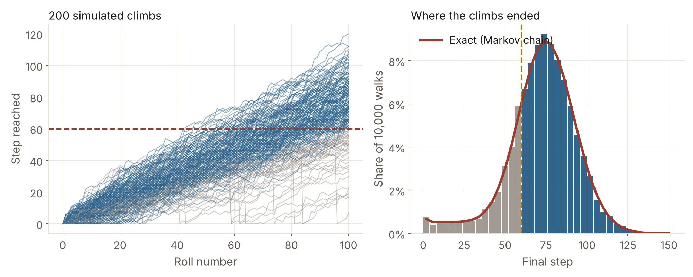

Data science project · Simulation, statistics and machine learning
What are the chances of winning the bet?
You bet you can climb 60 steps by rolling a die 100 times, with a 0.1% chance of clumsily falling back to the
bottom on every roll. Instead of working out a formula, we simulate thousands of climbs, then check the answer against
the exact math and ask what statistics and machine learning can add. Every step is shown and explained.
Exact chance of reaching step 60 in 100 rolls, with the 0.1% clumsiness
83.7%
Exact chance if nobody ever fell. Clumsiness costs about 6 points
9.5%
Climbs that take at least one clumsy fall to zero during the 100 rolls
11
Statistics and machine-learning methods in the lab, tested against the exact answer

Left: 200 simulated climbs; blue ones reached the target. Right: where 10,000 climbs ended, with the exact answer from a Markov chain drawn over the simulation.
The verdict: is it a good bet?
Yes, about 78 times in 100. The simulation, the exact calculation and the machine-learning models all agree.
The average climb ends around step 72, and the 0.1% chance of falling to zero costs about 6 points of win chance.
See the lab.
Key findings
Simulation matches the exact math. Treating the game as a Markov chain gives the exact odds, 77.7%. A large
simulation lands on the same number, and its whole spread of outcomes matches the exact distribution.
You need surprisingly few walks. 500 walks gives about ±4 points of uncertainty; the error shrinks with the
square root of the walks, so halving it takes four times as many. A Bayesian view and a bootstrap tell the same story.
You can know your odds mid-game. Working backwards from the last roll gives a map of the chance of winning from every
position (a value function, the same idea reinforcement learning uses). From the start the chance is 77.7%; one third of the way in
and standing on step 40 it is 93%; on step 20 it is 77%.
Machine learning can learn those odds from examples. A logistic regression and a small neural network, trained on
simulated walks, predict mid-game winners as well as the exact answer. On the test set they were essentially tied on AUC and on log loss, so the extra
flexibility of the neural network bought nothing: the true relationship is already a smooth S-curve.
Clumsiness really matters. A formal two-proportion test confirms that the drop from 84% to 78% is not luck, and the
sensitivity table shows it hurts more the harder the target is.
It behaves like a textbook random walk. Roll-to-roll changes are essentially uncorrelated while the level remembers where
it has been, with a steady positive drift of about three-quarters of a step per roll.
The whole project told as a 12-slide story: the bet, the simulation, the exact math, how many walks are enough,
your odds mid-game, what machine learning adds, and the verdict.
Started from the notebook. The original exercise (a DataCamp lesson in NumPy and Matplotlib) simulates dice, builds a
random walk, adds clumsiness and counts how often the walk reaches 60.
Rebuilt it for the browser. The same rules run in plain JavaScript with a seedable random generator, so anyone can change
the settings and re-run it, and the same seed always gives the same result.
Solved it exactly. A dynamic-programming version tracks the probability of every step after every roll. This gives the
true answer to check every other method against.
Tested the methods. Statistics (confidence intervals, bootstrap, Bayesian updating, hypothesis tests, regression,
autocorrelation) and machine learning (logistic regression, a neural network, k-means clustering, outlier detection) are all
run on the same simulation and measured against the exact answer. A test suite checks the maths in Node.
Limits. The game is deliberately simple, so a complete exact answer exists; real problems rarely
allow that check. The machine-learning models predict from a single number (the current step), which is all the game's rules allow
them to use. Results from the browser use a pseudo-random generator that passes a fairness test but is not cryptographic.